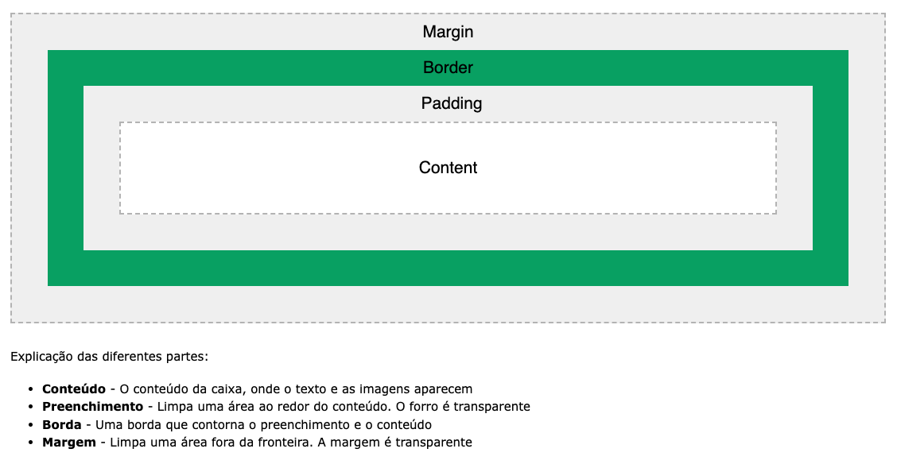

Cascading Style Sheets (CSS) é uma linguagem de marcação responsável pelo visual das suas páginas da web. Ele controla as cores, fontes e layouts dos elementos do seu site. Esta linguagem de estilo também permite que você adicione efeitos ou animações para o seu site. Você pode usá-la para exibir algumas animações CSS como os efeitos de clique em botões, de spinner e de loader, assim como fundos animados. Sem o CSS, o seu site vai aparecer como uma página HTML simples. Veja abaixo como fica o Twitter se a gente desabilitar o CSS:
O CSS interno ou incorporado requer que você adicione a tags (style) na seção (head) do seu documento HTML.
Este estilo de CSS é um método efetivo de estilizar uma única página. Contudo,
usar esse estilo em múltiplas páginas pode consumir muito tempo, já que você precisa definir as regras CSS para
cada página do seu site.
Desvantagens de CSS Interno:
Adicionar o código para o documento HTML pode aumentar o tamanho da página e o tempo de carregamento.
Com o CSS externo, você vai linkar as páginas da internet com um arquivo.
CSS externo, que você pode criar usando qualquer editor de texto no seu dispositivo (ex.: Notepad++).
Este tipo de CSS é um método mais eficiente, especialmente se você está estilizando um site grande.
Ao editar um arquivo .css, você pode modificar um site inteiro de uma só vez.
Vantagens de CSS Externo:
Como o código CSS está num documento separado, os seus arquivos HTML terão uma estrutura mais limpa e serão menores
O mesmo arquivo .css pode ser usado em várias páginas.
Desvantagens de CSS Externo:
Até que o CSS externo seja carregado, a página pode não ser processada corretamente.
Fazer o upload ou links para múltiplos arquivos CSS pode aumentar o tempo de download do seu site.
O CSS inline é usado para dar estilo a um elemento HTML específico.
Para este estilo de CSS você somente vai precisar adicionar o atributo style para cada tag HTML,
sem usar os seletores.
Este tipo de CSS não é realmente recomendado, já que cada tag HTML precisa ser estilizada de maneira individual.
Gerenciar o seu site pode se tornar uma tarefa bem difícil de você só usa o CSS inline.
Contudo, o CSS nline no HTML pode ser útil para algumas situações. Por exemplo,
sem casos onde você não tem acesso aos arquivos CSS ou precisa aplicar estilos para um elemento único.
Vantagens do CSS Inline :
Você pode inserir elementos CSS de maneira fácil e rápida numa página HTML. É por isso que esse método é útil
para testar e pré-visualizar mudanças, assim como executar correções rápidas no seu site.
Você não precisa criar e fazer upload de um documento separado como no estilo externo.
Desvantagens do Inline CSS:
Adicionar regras CSS para cada elemento HTML consome muito tempo e faz a sua estrutura HTML ficar bagunçada.
Estilizar múltiplos elementos pode afetar o tamanho da sua página o tempo para download.
O modelo de caixa CSS
Em CSS, o termo "modelo de caixa" é usado quando se fala de design e layout.
O modelo de caixa CSS é essencialmente uma caixa que envolve cada elemento HTML.
Ele consiste em: margens, bordas, preenchimento e o conteúdo real. A imagem abaixo ilustra o modelo da caixa:

Quando escrevemos o HTML, marcamos o conteúdo da página com tags que melhor representam o significado daquele
conteúdo. Quando abrimos a página no navegador é possível perceber que ele mostra as informações com estilos
diferentes.
Um h1, por exemplo, por padrão é apresentado em negrito numa fonte maior.
Parágrafos de texto são espaçados entre si, e assim por diante. Isso quer dizer que o navegador tem um estilo
padrão para as tags que usamos. Porém para fazer sites bonitos, ou com o visual próximo de uma dada identidade
visual (design), vamos precisar personalizar a apresentação padrão dos elementos da página.
Além da tag (font), várias outras tags de estilo existiam. Mas isso é passado.
Hoje em dia tags HTML para estilo são má prática e jamais devem ser usadas, são interpretadas apenas para o modo
de compatibilidade.
Em seu lugar, surgiu o CSS (Cascading Style Sheet ou folha de estilos em cascata), que é uma outra linguagem,
separada do HTML, com objetivo único de cuidar da estilização da página. A vantagem é que o CSS é bem mais robusto
que o HTML para estilização, como veremos. Mas, principalmente, escrever formatação visual misturado com conteúdo
de texto no HTML se mostrou algo impraticável. O CSS resolve isso separando as coisas; regras de estilo não
aparecem mais no HTML, apenas no CSS.
Para mais informações sobre estilização com CSS: